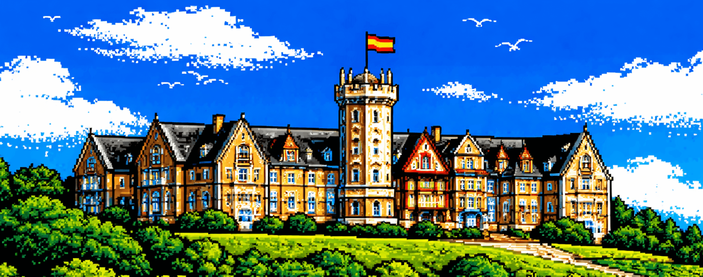
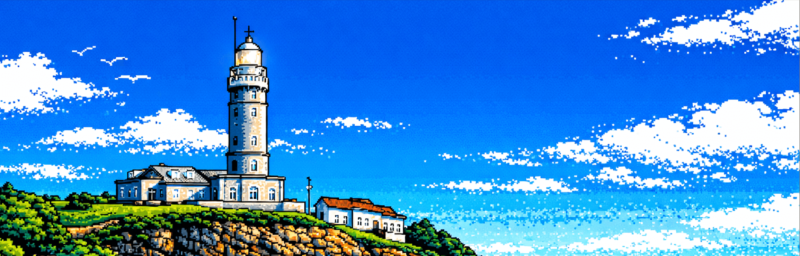
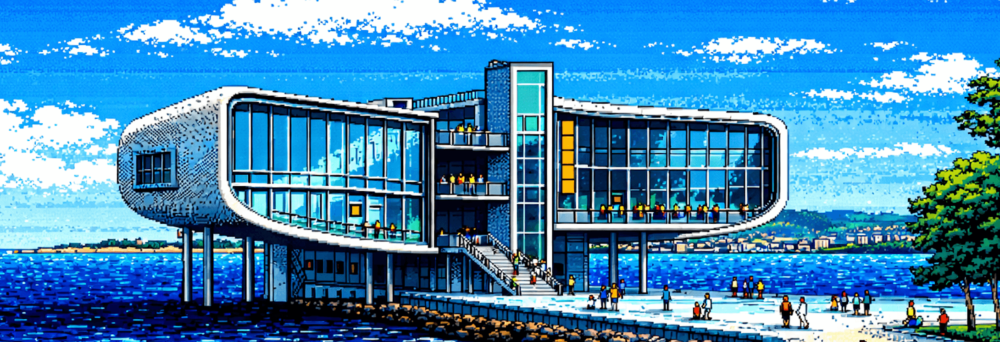

UNO DE LOS GRANDES SÍMBOLOS DE LA CIUDAD
El Palacio de la Magdalena es uno de los edificios más emblemáticos de Santander. Situado en la península del mismo nombre, fue residencia de verano de la familia real a comienzos del siglo XX y hoy es uno de los iconos visuales más reconocibles de la ciudad.

COSTA, NAVEGACIÓN Y HORIZONTE ATLÁNTICO
El Faro de Cabo Mayor domina los acantilados al norte de la ciudad y forma parte del paisaje más característico de la costa cántabra. Desde su construcción ha sido una referencia para la navegación y un símbolo del carácter marítimo de Santander.
LA SANTANDER CONTEMPORÁNEA
El Centro Botín representa la etapa cultural más reciente de la ciudad. Situado frente a la bahía, conecta el arte contemporáneo con el paseo marítimo y simboliza la renovación urbana y cultural del Santander del siglo XXI.
